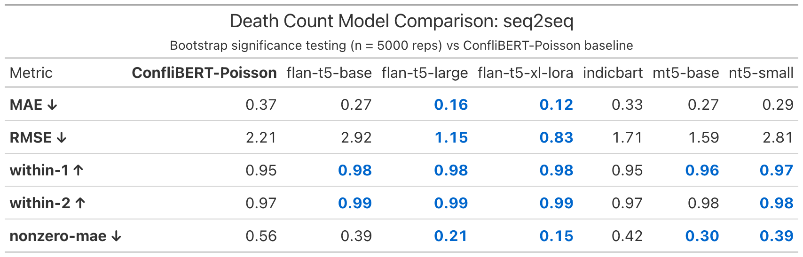
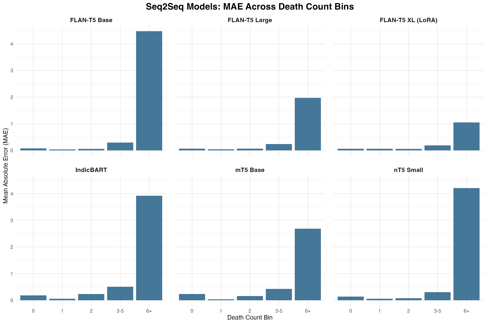

Main Seq2Seq Results

Seq2Seq Models, Code Structure, and Reliability Issues
February 26, 2026
0, 1, 2, 3-5, 6+)3-5, 6+)
models/count-models/death-count-extraction-seq2seq.ipynbmodels/count-models/utils/data_utils.py
prepare_seq2seq_data(...)tokenize_seq2seq(...)models/count-models/utils/training_utils.pymodels/count-models/utils/extraction_utils.py
extract_number(...)parse_prediction(...)models/count-models/utils/metrics_utils.py
compute_metrics(...)0, errors can be misattributed to the modelExcerpt from models/count-models/utils/extraction_utils.py:
def parse_prediction(raw_output, model_type='seq2seq'):
if model_type == 'regression':
try:
return max(0, round(float(raw_output)))
except:
return 0
else:
num = extract_number(raw_output)
return num if num is not None else 00parse_successparse_methoddefaulted_to_zero_due_to_parse_failure3-5 and 6+ bins
Comments?
Thank you! 🙏
Questions / feedback welcome